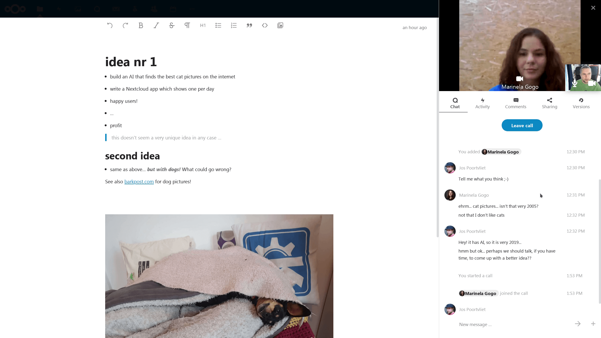
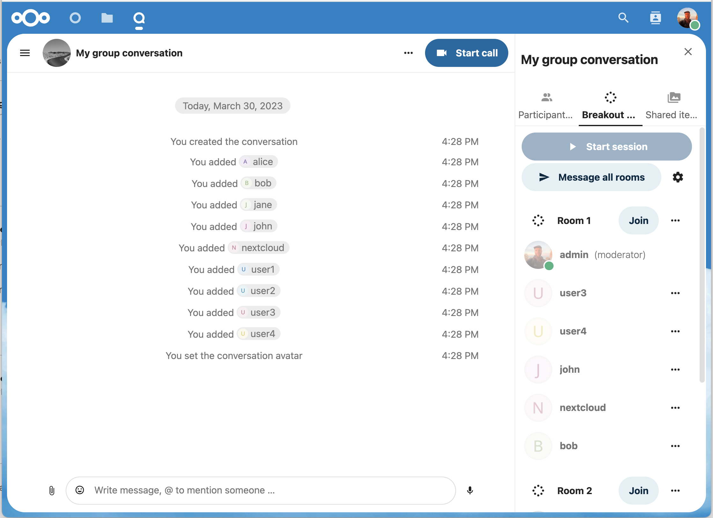

Avanserte Snakke funksjoner
Nextcloud Snakke har eit nummer av avanserte funksjoner som brukarar kanskje vil finne nyttige.
Matterbridge
Matterbridge integrering i Nextcloud Snakke gjer det mogleg å skape ’bruer’ mellom Snakke samtaler og konversasjoner på andre chatte tenester som MS Teams, Discord, Matrix og andre. Du kan finne ei liste over støtta protokoller på Matterbridge GitHub-siden.
Ein moderator kan legge til ein Matterbridge tilkopling i chatte konversasjon innstillingene.

Kvar bru har sine eigne nødvendigheter når det kjem til konfigurasjon. Informasjon til det meste er tilgjengeleg på Matterbridge wiki og kan bli aksessert bak «meir informasjon» menyen i «…» menyen. Du kan også aksessere wiki direkte.
Lobbyen
Lobby funksjonen tilleter deg å vise gjester ein vente skjerm fram til samtalen byrjar. Dette er ideelt for webinarer med ekstra deltakere, for eksempel.

Du kan velge å la deltakerene bli med i samtalen til ei spesifikk tid, eller når du avviser lobbyen manuelt.
Kommandoer
Nextcloud tilleter brukarar å utøve handlingar ved å bruke kommandoer. Ein kommando ser typisk slik ut:
/wiki fly
Administratorer kan konfigurere, aktivere og deaktivere kommandoer. Brukarar kan bruke «hjelp» kommandoen til å finne ut kva kommandoer som er tilgjengelege.
/hjelp

Finn meir informasjon i den administrative dokumentasjonen for Snakking.
Snakk frå Filer
I Filer appen, kan du chatte om filer i sidefeltet, og til og med holde ein samtale medan du redigerer den. Fyrst må du bli med i chatten.


Du kan så chatte eller ha ein samtale med andre deltakere, sjølv når du starter å redigere filen.
I Snakke, vil ein samtale bli skapt til filen. Du kan chatte derifrå, eller gå tilbake til filen ved å bruke «…» menyen i toppen av høyre hjørne.

Skap oppgåver frå chatten eller del oppgåver i chatten
Om Deck er installert, kan du bruke «…» menyen til ein chatte melding og snu meldingen til ein Deck oppgåve.


Frå innan Deck, kan du dele oppgåver til chatte samtaler.


Breakout rooms
Breakout rooms allow you to divide a Nextcloud Talk call into smaller groups for more focused discussions. The moderator of the call can create multiple breakout rooms and assign participants to each room.
Configure breakout rooms
To create breakout rooms, you need to be a moderator in a group conversation. Click on the top-bar menu and click on «Setup breakout rooms».

A dialog will open where you can specify the number of rooms you want to create and the participants assignment method. Here you’ll be presented with 3 options:
Automatically assign participants: Talk will automatically assign participants to the rooms.
Manually assign participants: You’ll go through a participants editor where you can assign participants to rooms.
Allow participants choose: Participants will be able to join breakout rooms themselves.

Manage breakout rooms
Once the breakout rooms are created, you will be able to see them in the sidebar.
From the sidebar header
Start and stop the breakout rooms: this will move all the users in the parent conversation to their respective breakout rooms.
Broadcast a message to all the rooms: this will send a message to all the rooms at the same time.
Make changes to the assigned participants: this will open the participants editor where you can change which participans are assigned to which breakout room. From this dialog it’s also possible to delete the breakout rooms.
From the breakout room element in the sidebar, you can also join a particular breakout room or send a message to a specific room.